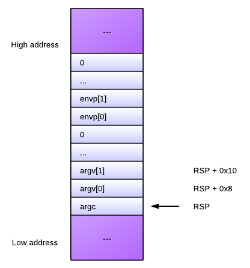

In this article I want to explore what happens when a statically linked program gets executed on Linux. By statically linked I mean a program that does not require any shared objects to run, even the ubiquitous libc. In reality, most programs one encounters on Linux aren't statically linked, and do require one or more shared objects to run. However, the running sequence of such programs is more involved, which is why I want to present statically linked programs first. It will serve as a good basis for understanding, allowing me to explore most of the mechanisms involved with less details getting in the way. In a future article I will cover the dynamic linking process in detail.
The Linux kernel
Program execution begins in the Linux kernel. To run a program, a process will call a function from the exec family. The functions in this family are all very similar, differing only in small details regarding the manner of passing arguments and environment variables to the invoked program. What they all end up doing is issuing the sys_execve system call to the Linux kernel.
sys_execve does a lot of work to prepare the new program for execution. Explaining it all is far beyond the scope of this article - a good book on kernel internals can be helpful to understand the details [1]. I'll just focus on the stuff useful for our current discussion.
As part of its job, the kernel must read the program's executable file from disk into memory and prepare it for execution. The kernel knows how to handle a lot of binary file formats, and tries to open the file with different handlers until it succeeds (this happens in the function search_binary_handler in fs/exec.c). We're only interested in ELF here, however; for this format the action happens in function load_elf_binary (in fs/binfmt_elf.c).
The kernel reads the ELF header of the program, and looks for a PT_INTERP segment to see if an interpreter was specified. Here the statically linked vs. dynamically linked distinction kicks in. For statically linked programs, there is no PT_INTERP segment. This is the scenario this article covers.
The kernel then goes on mapping the program's segments into memory, according to the information contained in the ELF program headers. Finally, it passes the execution, by directly modifying the IP register, to the entry address read from the ELF header of the program (e_entry). Arguments are passed to the program on the stack (the code responsible for this is in create_elf_tables). Here's the stack layout when the program is called, for x64:
At the top of the stack is argc, the amount of command-line arguments. It is followed by all the arguments themselves (each a char*), terminated by a zero pointer. Then, the environment variables are listed (also a char* each), terminated by a zero pointer. The observant reader will notice that this argument layout is not what one usually expects in main. This is because main is not really the entry point of the program, as the rest of the article shows.
Program entry point
So, the Linux kernel reads the program's entry address from the ELF header. Let's now explore how this address gets there.
Unless you're doing something very funky, the final program binary image is probably being created by the system linker - ld. By default, ld looks for a special symbol called _start in one of the object files linked into the program, and sets the entry point to the address of that symbol. This will be simplest to demonstrate with an example written in assembly (the following is NASM syntax):
section .text
; The _start symbol must be declared for the linker (ld)
global _start
_start:
; Execute sys_exit call. Argument: status -> ebx
mov eax, 1
mov ebx, 42
int 0x80
This is a very basic program that simply returns 42. Note that it has the _start symbol defined. Let's build it, examine the ELF header and its disassembly:
$ nasm -f elf64 nasm_rc.asm -o nasm_rc.o
$ ld -o nasm_rc64 nasm_rc.o
$ readelf -h nasm_rc64
ELF Header:
Magic: 7f 45 4c 46 02 01 01 00 00 00 00 00 00 00 00 00
Class: ELF64
...
Entry point address: 0x400080
...
$ objdump -d nasm_rc64
nasm_rc64: file format elf64-x86-64
Disassembly of section .text:
0000000000400080 <_start>:
400080: b8 01 00 00 00 mov $0x1,%eax
400085: bb 2a 00 00 00 mov $0x2a,%ebx
40008a: cd 80 int $0x80
As you can see, the entry point address in the ELF header was set to 0x400080, which also happens to be the address of _start.
ld looks for _start by default, but this behavior can be modified by either the --entry command-line flag, or by providing an ENTRY command in a custom linker script.
The entry point in C code
We're usually not writing our code in assembly, however. For C/C++ the situation is different, because the entry point familiar to users is the main function and not the _start symbol. Now it's time to explain how these two are related.
Let's start with this simple C program which is functionally equivalent to the assembly shown above:
int main() {
return 42;
}
I will compile this code into an object file and then attempt to link it with ld, like I did with the assembly:
$ gcc -c c_rc.c
$ ld -o c_rc c_rc.o
ld: warning: cannot find entry symbol _start; defaulting to 00000000004000b0
Whoops, ld can't find the entry point. It tries to guess using a default, but it won't work - the program will segfault when run. ld obviously needs some additional object files where it will find the entry point. But which object files are these? Luckily, we can use gcc to find out. gcc can act as a full compilation driver, invoking ld as needed. Let's now use gcc to link our object file into a program. Note that the -static flag is passed to force static linking of the C library and the gcc runtime library:
$ gcc -o c_rc -static c_rc.o
$ c_rc; echo $?
42
It works. So how does gcc manage to do the linking correctly? We can pass the -Wl,-verbose flag to gcc which will spill the list of objects and libraries it passed to the linker. Doing this, we'll see additional object files like crt1.o and the whole libc.a static library (which has objects with telling names like libc-start.o). C code does not live in a vacuum. To run, it requires some support libraries such as the gcc runtime and libc.
Since it obviously linked and ran correctly, the program we built with gcc should have a _start symbol at the right place. Let's check [2]:
$ readelf -h c_rc
ELF Header:
Magic: 7f 45 4c 46 02 01 01 03 00 00 00 00 00 00 00 00
Class: ELF64
...
Entry point address: 0x4003c0
...
$ objdump -d c_rc | grep -A15 "<_start"
00000000004003c0 <_start>:
4003c0: 31 ed xor %ebp,%ebp
4003c2: 49 89 d1 mov %rdx,%r9
4003c5: 5e pop %rsi
4003c6: 48 89 e2 mov %rsp,%rdx
4003c9: 48 83 e4 f0 and $0xfffffffffffffff0,%rsp
4003cd: 50 push %rax
4003ce: 54 push %rsp
4003cf: 49 c7 c0 20 0f 40 00 mov $0x400f20,%r8
4003d6: 48 c7 c1 90 0e 40 00 mov $0x400e90,%rcx
4003dd: 48 c7 c7 d4 04 40 00 mov $0x4004d4,%rdi
4003e4: e8 f7 00 00 00 callq 4004e0 <__libc_start_main>
4003e9: f4 hlt
4003ea: 90 nop
4003eb: 90 nop
Indeed, 0x4003c0 is the address of _start and it's the program entry point. However, what is all that code at _start? Where does it come from, and what does it mean?
Decoding the start sequence of C code
The startup code shown above comes from glibc - the GNU C library, where for x64 ELF it lives in the file sysdeps/x86_64/start.S [3]. Its goal is to prepare the arguments for a function named __libc_start_main and call it. This function is also part of glibc and lives in csu/libc-start.c. Here is its signature, formatted for clarity, with added comments to explain what each argument means:
int __libc_start_main(
/* Pointer to the program's main function */
(int (*main) (int, char**, char**),
/* argc and argv */
int argc, char **argv,
/* Pointers to initialization and finalization functions */
__typeof (main) init, void (*fini) (void),
/* Finalization function for the dynamic linker */
void (*rtld_fini) (void),
/* End of stack */
void* stack_end)
Anyway, with this signature and the AMD64 ABI in hand, we can map the arguments passed to __libc_start_main from _start:
main: rdi <-- $0x4004d4
argc: rsi <-- [RSP]
argv: rdx <-- [RSP + 0x8]
init: rcx <-- $0x400e90
fini: r8 <-- $0x400f20
rdld_fini: r9 <-- rdx on entry
stack_end: on stack <-- RSP
You'll also notice that the stack is aligned to 16 bytes and some garbage is pushed on top of it (rax) before pushing rsp itself. This is to conform to the AMD64 ABI. Also note the hlt instruction at address 0x4003e9. It's a safeguard in case __libc_start_main did not exit (as we'll see, it should). hlt can't be executed in user mode, so this will raise an exception and crash the process.
Examining the disassembly, it's easy to verify that 0x4004d4 is indeed main, 0x400e90 is __libc_csu_init and 0x400f20 is __libc_csu_fini. There's another argument the kernel passes _start - a finish function for shared libraries to use (in rdx). We'll ignore it in this article.
The C library start function
Now that we understood how it's being called, what does __libc_start_main actually do? Ignoring some details that are probably too specialized to be interesting in the scope of this article, here's a list of things that it does for a statically linked program:
- Figure out where the environment variables are on the stack.
- Prepare the auxiliary vector, if required.
- Initialize thread-specific functionality (pthreads, TLS, etc.)
- Perform some security-related bookkeeping (this is not really a separate step, but is trickled all through the function).
- Initialize libc itself.
- Call the program initialization function through the passed pointer (init).
- Register the program finalization function (fini) for execution on exit.
- Call main(argc, argv, envp)
- Call exit with the result of main as the exit code.
Digression: init and fini
Some programming environments (most notably C++, to construct and destruct static and global objects) require running custom code before and after main. This is implemented by means of cooperation between the compiler/linker and the C library. For example, the __libc_csu_init (which, as you can see above, is called before the user's main) calls into special code that's inserted by the linker. The same goes for __libc_csu_fini and finalization.
You can also ask the compiler to register your function to be executed as one of the constructors or destructors. For example [4]:
#include <stdio.h>
int main() {
return 43;
}
__attribute__((constructor))
void myconstructor() {
printf("myconstructor\n");
}
myconstructor will run before main. The linker places its address in a special array of constructors located in the .ctors section. __libc_csu_init goes over this array and calls all functions listed in it.
Conclusion
This article demonstrates how a statically linked program is set up to actually run on Linux. In my opinion, this is a very interesting topic to study because it demonstrates how several large components of the Linux eco-system cooperate to enable the program execution process. In this case, the Linux kernel, the compiler and linker, and the C library are involved. In a future article I will present the more complex case of a dynamically linked program, where another agent joins the game - the dynamic linker. Stay tuned.

| [1] | Or just read the source, if you're brave. |
| [2] | Note that due to our static linking of the C runtime into c_rc, it's quite large (800 KB on my 64-bit Ubuntu system). Therefore we can't just easily look at the disassembly and have to use some grep-fu. |
| [3] | This is true for glibc 2.16. |
| [4] | Note that the constructor executes printf. Is this safe? If you look at the initialization sequence of __libc_start_main, you'll see that the C library is initialized before the user's constructors are called, so yes, it's safe. |